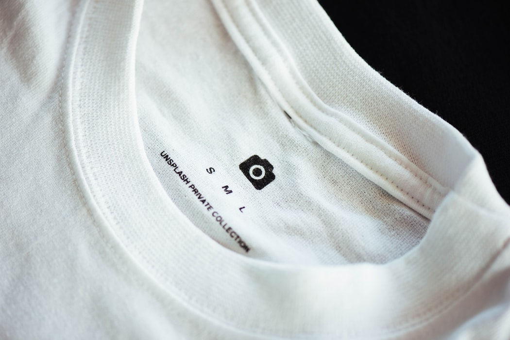

Definition

- Definition
** Cotton is the most dominating natural fiber in the apparel and textile industry, with a global textile production of 24.5 million tons in 2013. It makes up 25-36% of the textile market. ** It is cultivated throughout the world, but especially in dry areas where other crops are mostly difficult to grow and uses between 2.4% - 2.6% of global arable land. 73% of cotton cultivation relies on irrigation, which makes the water footprint of cotton very large - the global average water footprint of seed cotton is 3,644 cubic meters per ton, the equivalent of nearly 1.5 Olympic swimming pools. ** Cotton is responsible for 24% of insecticide use and 11% of pesticide use, and of the $4.1 billion that farmers spend on pesticides each year, 25% of that is used on cotton crops. ** There are 5 main types of cotton: recycled, organic, fair trade, conventional, and conflict ** Some common characteristics of cotton: softness, durability, absorbency, holds dye well, breathability, no static cling
Supply Chain Overview
- Analysis:
** Farming: *** Cotton is grown in warmer climates *** After cotton is harvested, the plant is ginned to separate the lint from the seeds. Once cleaned, the bales are shipped to mills to be spun into fibers and fabric. *** The top 4 cotton producers comprise 70-75% of the global cotton production. They are India (6.4 metric tons per year), China (5.9 metric tons per year), USA (4.3 metric tons per year), and Brazil (2.9 metric tons per) ** Textile Mills: *** After cotton is ginned and cleaned, it is sent to mills to be manufactured into yarn, woven into fabrics, and processed or dyed to finish. *** Chemical and wastewater runoff is a big issue during this process. *** China is the world leader in processing raw cotton into textiles/fabric. *** Main Countries: China, India, Pakistan, Bangladesh, USA ** Garment construction/processing factories: *** Multiple samples are made before an order is placed, if approved. *** Once the factory receives the order the fabric is cut as per the pattern resulting in scrap fabric which is usually trashed and landfilled *** The garment is passed along an assembly line with one worker doing one task for long hours each day *** When the order is complete, the goods are bagged up and shipped to the distribution centers where retailers then deliver to each store. ** Suppliers/distributors *** Cotton travels by ships, trains, and trucks across the world, between suppliers and distributors *** There remain a lot of uncertainties regarding transportation in the supplier/distributor phase, as the impact can vary drastically depending on the path our t-shirt takes through global production ** Retailers: *** Cotton is sold as t-shirts in major markets, but primarily in higher income countries: USA, China, EU, Russia, Canada, India *** 2 billion t-shirts are sold globally each year *** Fast fashion/cheap clothing boosted demand and global production by 400% from 1994 to 2014 to 80 billion garments per year ** Waste or recycling facilities: *** Less than 1% of clothing is recycled into materials for new clothing. *** 12% of clothing is cascaded and downcycled into stuffing or insulation *** The EPA estimated that in 2017 the number of textiles created was nearly 17 million tons, with only 2.6 million tons being recycled, 3.2 million tons being incinerated and 11.2 million tons going to landfills. *** Only 10% of clothes donated to charity shops are actually resold. The other 90% is sold by weight to textile recycling companies who ship clothing deemed resellable in bales to African countries like Ghana, Angola, Cameroon, Congo, Tanzania and Rwanda. If the goods cannot be resold they become part of the growing textile landfills around Africa.
Recent & Relevant News
- Information:
** Amid allegations of forced labor in the cotton industry in the Xinjiang region of China, (which produces a fifth of the world’s cotton) and the consequential strained relations with western countries, Beijing is looking to reduce its reliance on imported cotton from the United States and Australia. Instead, looking to Uzbekistan, Tajikistan and Kyrgyzstan to supplement their needs. ** The Covid-19 Tracker (https://www.workersrights.org/issues/covid-19/tracker/) continues to monitor which brands are acting responsibly towards suppliers and their workers during the pandemic, and shame companies who failed to pay for their last minute canceled orders. ** Further impacts of cotton production: *** Cotton uses exorbitant amounts of water, usually in hot, dry, water scarce areas. Leaving local villages without enough water. *** Pesticides are overused particularly with conventional cotton which seeps into the earth and into underground wells polluting the drinking water for entire villages. *** The constant use of synthetic fertilizers eventually degrades soil quality, therefore causing continuous increasing amounts needed to achieve a good harvest. *** Toxic chemicals within fertilizers partnered with rare use of protective equipment causes an increased rate of birth defects and cancers. *** Cotton Farmers, especially in India, have a very high suicide rate due to the financial instability, middlemen money lending, lack of governmental support and harvest unpredictability, often drinking the pesticides used in the fields. *** Any chemicals used in the dyeing and finishing processes are usually dumped into the local water supply without being cleaned or treated. *** Garment factory workers often work 14-16 hours per day, 7 days per week, averaging at 96 hours
Legal Issues & Major Controversies
- Issues:
** Bangladesh: Rana Plaza Collapse *** April 2013, garment factory in Bangladesh collapsed and killed over 1000 workers *** Catalyst for building safety and workers’ rights in the garment industry *** Hundreds of large global brands joined/signed the Alliance for Bangladesh Worker Safety and Accord on Fire and Building Safety *** Brands finally took accountability and recognized the supply chain issue, putting money into improving the safety and transparency of their supply chains ** China: Forced Labor in the Uyghur Region *** The Muslim Uyghurs are reported to be held in internment camps and subject to torture, political indoctrination, and forced labor in order to assimilate the ethnic minority *** A “poverty alleviation” scheme but actually cultural genocide *** The US has recently banned all cotton imports from the Xinjiang region of China *** Difficult for brands to determine if their products contain cotton from this region--around 1 in 5 garments from major brands contain Xinjiang cotton ** Uzbekistan: The End of Forced Labor *** The Uzbek government eliminated state-sponsored forced child labor in the cotton harvest, and then committed in 2017 to eliminate forced adult labor. *** The government has made significant progress toward achieving that commitment, including increasing cotton picking wages and enacting measures to abolish government production quotas for cotton. *** Responsible Sourcing Network (RSN) and the Cotton Campaign (CC), of which RSN is a founding member, welcome the Uzbek government’s high-level political commitment to end forced labor in the cotton sector *** The situation is being monitored by the ILO (International Labor Organization) as well as by independent NGOs, such as the Uzbek Forum for Human Rights
Mapping the Supply Chain
Farming:
- Cotton is grown in warmer climates After cotton is harvested, the plant is ginned to separate the lint from the seeds.
- Once cleaned, the bales are shipped to mills to be spun into fibers and fabric. The top 4 cotton producers comprise 70-75% of the global cotton production.
Textile Mills:
- After cotton is ginned and cleaned, it is sent to mills to be manufactured into yarn, woven into fabrics, and processed or dyed to finish. Chemical and wastewater runoff is a big issue during this process.
- China is the world leader in processing raw cotton into textiles/fabric.
- Main Countries: • China • India • Pakistan • Bangladesh • USA
Garment Construction:
- The processed textiles are cut and sewn into finished garments.
- The low labor costs are increasing cotton textile production countries like Bangladesh, Vietnam, and Indonesia.
- There are often trade-offs between cost, speed, efficiency, and complying with regulations.
- Main Countries: • China • Bangladesh • Vietnam • India • Indonesia • European Union
- Cotton is grown in warmer climates After cotton is harvested, the plant is ginned to separate the lint from the seeds.
- Once cleaned, the bales are shipped to mills to be spun into fibers and fabric. The top 4 cotton producers comprise 70-75% of the global cotton production.
- Additional Information:
** Cotton is grown in warmer climates. After the cotton is harvested, the plant is ginned to separate the lint from the seeds. Once cleaned, the bales are shipped to mills to be spun into fibers and fabric. The top 4 cotton producers comprise of 70-75% of global cotton production *** China: 5.9 metric tons of cotton *** India: 6.4 metric tons of cotton *** USA 4.3 metric tons of cotton ** After the cotton is ginned and cleaned, it is sent to mills to be manufactured into yarn, woven into fabrics, and processed or dyed to finish. Chemical and wastewater runoff is a big issue in this process. China is the world leader in processing raw cotton into textiles ** The processed textiles are cut and sewn into finished garments usually in countries with low labor costs like Bangladesh, Vietnam, and Indonesia. There are often trade-offs between cost, speed, efficiency, and complying with regulations.
Supplier Engagement Model
- Farming
** Standards for growers ** Forced labor/child labor ** Water usage for irrigation ** Pesticide usage ** Soil degradation
- Textile Mills
** Water usage for processing ** Waste water ** Dyes and chemical usage ** Working hours ** GHG emissions
- Garment Construction
** GHG emissions ** Working hours ** Fabric waste
Governance
- Information:
** Better Cotton Initiative (BCI) - sets standards for growers that require ethical treatment of workers and environmental stewardship ** Certified Organic Cotton - this guideline requires that cotton be grown in a rotation to build soil fertility, without synthetic chemicals or GMOs, and comply with any other local, regional, or national cotton regulations ** The US Cotton Trust Protocol - sets standards for participating companies to reduce soil loss, water and land usage, GHG emissions, and energy consumption ** Cradle to Cradle Certification - designers can be certified if their products meet sustainability guidelines for material health, material reuse, renewable energy and carbon management, water stewardship, and social fairness. ** Fair Trade Certified - certification signifies a brand is a leader in sustainable development and corporate responsibility ** Certified B Corporation - certification signifies businesses are legally required to consider the impact of their decisions on their workers, customers, suppliers, community, and the environment ** Zero Discharge of Hazardous Materials. This is a certificate granted to suppliers that reduce the amount of hazardous chemicals discharged into effluent. This program supports implementation for necessary changes. ** The Coalition to End Forced Labor in the Uyghur Region, and have committed to exit the Xinjiang region at every level of our supply chain, from cotton to finished products within a year ** Fair Labor Association the FLA Cotton Project was established in response to concern regarding labor rights surrounding cotton production around Uzbek cotton and the use of child labor. The FLA seeks to identify the origin of the cotton making it into final goods, trace the cotton along the entire supply chain, and identify and address labor rights risks in cotton production.
Benchmarks
| Gap | H&M Group | Inditex | Fast Retailing | PVH Brands | |
| Location | San Francisco, USA | Stockholm, Sweden | Arteixo, Spain | Yamaguchi, Japan | New York City, USA |
| Sales Revenues in Billions (USD) | $16.58 | $21.50 | $28.89 | $21.51 | $9.66 |
| Brands | * GAP * Old Navy * Banana Republic | * H&M * COS * ARKET | * Zara * Oysho * Massimo Dutti | * Uniqlo * J Brand * GU | * Tommy Hilfiger * Calvin Klein * IZOD |
| Supply Chain Strategy | * Extensive LCA monitoring | * Code of Ethics * Required Sustainability Commitment | * Adheres to UN sustainable development goals | * Source >50% sustainable cotton | * Find ways to reuse and recycle scraps * Requires living wage payments |
| Gap | H&M Group | Inditex | Fast Retailing | PVH Brands | |
| Location | San Francisco, USA | Stockholm, Sweden | Arteixo, Spain | Yamaguchi, Japan | New York City, USA |
| Sales Revenues in Billions (USD) | $16.58 | $21.50 | $28.89 | $21.51 | $9.66 |
| Brands | * GAP * Old Navy * Banana Republic | * H&M * COS * ARKET | * Zara * Oysho * Massimo Dutti | * Uniqlo * J Brand * GU | * Tommy Hilfiger * Calvin Klein * IZOD |
| Supply Chain Strategy | * Extensive LCA monitoring | * Code of Ethics * Required Sustainability Commitment | * Adheres to UN sustainable development goals | * Source >50% sustainable cotton | * Find ways to reuse and recycle scraps * Requires living wage payments |
| Gap | H&M Group | Inditex | Fast Retailing | PVH Brands | |
| Location | San Francisco, USA | Stockholm, Sweden | Arteixo, Spain | Yamaguchi, Japan | New York City, USA |
| Sales Revenues in Billions (USD) | $16.58 | $21.50 | $28.89 | $21.51 | $9.66 |
| Brands | * GAP * Old Navy * Banana Republic | * H&M * COS * ARKET | * Zara * Oysho * Massimo Dutti | * Uniqlo * J Brand * GU | * Tommy Hilfiger * Calvin Klein * IZOD |
| Supply Chain Strategy | * Extensive LCA monitoring | * Code of Ethics * Required Sustainability Commitment | * Adheres to UN sustainable development goals | * Source >50% sustainable cotton | * Find ways to reuse and recycle scraps * Requires living wage payments |
Monitoring
Certifications & guidelines specific to cotton production:
- Better Cotton Initiative (BCI) - sets standards for growers that require ethical treatment of workers and environmental stewardship
- Certified Organic Cotton - this guideline requires that cotton be grown in a rotation to build soil fertility, without synthetic chemicals or GMOs, and comply with any other local, regional, or national cotton regulations
- The US Cotton Trust Protocol - sets standards for participating companies to reduce soil loss, water and land usage, GHG emissions, and energy consumption
Verification
- Certifications & guidelines not specific to cotton production:
- Cradle to Cradle Certification - designers can be certified if they products meet sustainability guidelines for material health, material reuse, renewable energy and carbon management, water stewardship, and social fairness.
- Fair Trade Certified - certification signifies a brand is a leader in sustainable development and corporate responsibility
- Certified B Corporation - certification signifies businesses are legally required to consider the impact of their decisions on their workers, customers, suppliers, community, and the environment
Reporting
- Stakeholders in the cotton industry use similar processes for selecting new suppliers. Brands like H&M, Adidas, Nike, and PUMA follow the process below. 1. Suppliers must be complete a self assessing audit or be registered with a few baseline programs that certify and perform audits.
- 1.1. Preference is given to the ILO Better Work Program and the Fair Labor Association (FLA) due to their rigor and standardization
- 1.2. Only factories with a passing grade above a B- are given a chance to start a new supplier relationship
- 2. Once a supplier has been selected, all compliance information and data for the manufacturer is stored with the Fair Factories Clearinghouse.
- 3. As an active member of the FLA and ILO, the manufacturers are requested to use them for future audits, ensuring that audit fatigue is avoided. Suppliers are also asked to complete the SAC HIGG Index SFM on an annual basis.
- 4. Outside of completing facility audits, suppliers are asked to comply with the retailer’s code of ethics and operate according to the code.
Life Cycle Assessments
- To evaluate the environmental and social aspects of a cotton product throughout its life cycle (cradle to grave) For this project, it is specific to a cotton t-shirt
** Marketing, purchasing, designing, benchmarking, goal-setting, policy-making
- LCAs can help determine which points of intervention during the supply chain of a cotton t-shirt can create the biggest change and reduce environmental and social impacts
- LCA of a cotton t-shirt analyzes the different impact categories of each stage: global warming potential, ozone depletion, acidification potential, eutrophication potential, ecotoxicity, human toxicity, human health particulate air, water scarcity footprint, blue water use
- In the LCA of a 100% cotton t-shirt, the boundaries are often the major phases of the life cycle:
** Human labor, construction of capital equipment, and maintenance and operation of support equipment are excluded from the system boundary based on their irrelevance to the environmental profiles measured
- Textile manufacturing and consumer use phases have the largest impact and dominated most of the impact categories in the LCAs
Other Challenges & Impacts
- Challenges & Impacts:
** The global average of water used for seed cotton is 3,664 cubic meters per tonne, equal to 1.5 Olympic size swimming pools. To make just one T-shirt, 2,495 liters of water are needed. Of the leading areas that grow cotton, many are also suffering from water stress and shortage. Particularly, the top producing areas of India, China and the southern United States. ** Cotton is at high risk for forced labor and child labor. In countries like Uzbekistan, Turkmenistan, and China, millions of citizens are forced into cotton fields to fulfill picking quotas in exchange for benefits and their livelihoods. Children are often needed to help fill quotas. Many brands commit to not using cotton from these areas, but due to the complexities and lack of transparency of the supply chain, and volume of cotton exported from controversial areas, it is difficult to completely avoid any high risk cotton in their garments. ** In 2002, Brazil initiated a formal World Trade Organization (WTO) dispute settlement case against the United States. The case argued that by shielding domestic cotton producers from shifts in global prices, U.S. domestic cotton subsidy programs had created market distortions and contributed to a decline in global cotton prices. The WTO ruled that U.S. domestic support programs for cotton did in fact contribute to lower world prices for cotton. In 2014, a settlement between the two countries was reached in which Brazil agreed to take no further WTO action on the cotton issue based on changes made in the U.S. cotton program the 2014 Farm Bill. But payments now eliminated to farmers just morphed into the Stacked Income Protection Plan (STAX). The Farm Bill expired in September 2018 but in that year Congress made cotton eligible under the Agricultural Risk Coverage (ARC), and Price Loss Coverage (PLC), commodity programs. So in 2018, cotton farmers can receive payments from three separate programs, even though demand and production of cotton remains high.
Innovations
- Innovations:
** Fashion for Good launches a new, two-year pilot project in collaboration with leading brands Kering and PVH Corp. and leading global textile manufacturer Arvind Limited to pilot a radically resource-efficient cotton farming technology provided by Fashion for Good innovator, Materra (formerly hydroCotton). Materra’s innovative combination of precision agriculture, environmental control and real-time data tracking facilitate resilience for cotton farming in developing regions where climate and resources prove challenging for cotton cultivation. ** Materra secured a two-year funded pilot program in Gujarat India to develop more sustainable cotton farming with Fashion for Good, Kering, PVH, and Arvind ** Fieldprint Calculator to allow farmers to assess how different management decision would impact the indicator ** Earth Colors: methods to extract resources for plant material to create bio-based dye ** Zero-D Dry Dye: textile printing with no polluted wastewater, automated cutting with AI to reduce production and inventory cuts and changes quickly with market trends ** Levis “Don’t wash”: campaign to educate consumers to not wash cotton denim as often unless absolutely necessary and reduce water usage
Conclusions
Recommendations for process improvements:
- Cotton t-shirt production continued improvement should focus on use-phase and textile manufacturing
** Consumer education for switching habits (using cold water, appropriate detergents, line drying, efficient washing machines and dryers) ** Optimize manufacturing with energy efficiency, environmentally friendly process chemicals *** Using recovered cotton to avoid dyeing process emissions/natural dyeing ** Onsite management of textile factories to lower energy consumption and emissions
- Need more municipal wastewater treatment plants
** Able to reduce emissions of COD, nitrogen, and phosphorus to the environment
- Changes are already being made to the agricultural process as seen by transition to organic (eliminate pesticides and synthetic fertilizers)
** Precision agriculture to detect crop needs, sample soil to see how fertilizer requirements vary
- Brands should work with fair trade sewers to achieve the Fair Trade Textile Standard
- How consumers can limit their impact:
** Wash less frequently *** Pretreat white t-shirts with enzyme spray, a non-toxic product that works to remove bio-based stains like sweat *** By washing once every 10 times of wear, electricity consumption would reduce by 14 billion kWh and the water consumption would reduce by 4 billion cubic meters per year in the USA ** Hand wash *** To reduce electricity consumption by 8% *** To save 167kg of water per t-shirt *** To reduce wastewater emissions per t-shirt by 170kg ** Wash on cold *** to reduce energy consumption and CO2 emissions per year by 30% ** Line dry *** To reduce electricity consumption by 47%
Further Analysis:
- Very little enforcement of these codes/protocols/associations. Most of them are voluntary. Company image and consumer pressure often dictate whether companies follow protocols or join associations. Should create some sort of mandatory association or codes for companies, suppliers, and farms to adhere to
- There is not a global standard for the protocols to be measured against Suggestions: The UN Alliance for Sustainable Fashion should intervene in bringing those liable for actions that go against the set protocols. Education required for consumer engagement and stewardship of the cotton clothing they purchase, leading to more responsible consumption and use.
- Additional research and development of innovative recycling processes that doesn’t further harm the environment.
Sources and References
http://www.ellenmacarthurfoundation.org/publications
https://www.epa.gov/facts-and-figures-about-materials-waste-and-recycling/textiles-material-specific-data
https://www.one.org/us/blog/what-really-happens-to-your-donated-clothing/
https://theor.org/work
https://www.statista.com/statistics/263055/cotton-production-worldwide-by-top-countries/
https://www.ecotextile.com/2021041927664/materials-production-news/china-looks-to-asia-for-more-cotton.html
https://link.springer.com/chapter/10.1007%2F978-3-319-66981-6_8
https://ojs.cnr.ncsu.edu/index.php/JTATM/article/view/14770
https://www.ikw.org/ikw-english/home-care-topics/detail/the-lifecycle-of-a-t-shirt-an-eco-assessment-670/
Zhang, Y., Liu, X., Xiao, R. et al. Life cycle assessment of cotton T-shirts in China. Int J Life Cycle Assess 20, 994–1004 (2015). https://doi-org.ezp-prod1.hul.harvard.edu/10.1007/s11367-015-0889-4
HerreraAlmanza-Corona2020_Article_UsingSocialLifeCycleAssessment.pdf
https://www.statista.com/chart/17903/monthly-minimum-wage-in-the-global-garment-industry/
https://www.sustainyourstyle.org/old-working-conditions
https://cleanclothes.org/poverty-wages
https://www.fairtrade.net/news/setting-the-standard-for-a-fashion-revolution
https://www.statista.com/statistics/263055/cotton-production-worldwide-by-top-countries/
https://www.ers.usda.gov/topics/crops/cotton-wool/cotton-sector-at-a-glance/
https://www.theguardian.com/sustainable-business/2015/mar/20/cost-cotton-water-challenged-india-world-water-day
https://knoema.com/infographics/psoqqgg/h-m-locations-worldwide-2008-2019
https://www.jstor.org/stable/resrep26555
https://recycle.com/whats-new/textile-recovery/
https://www.fairtradecertified.org/
https://www.fairtradeamerica.org/shop-fairtrade/fairtrade-products/clothing-textiles/
https://www.ilo.org/global/lang--en/index.htm
https://betterwork.org/
https://www.fairfactories.org/
https://bcorporation.net/
https://www.fashionrevolution.org/about/transparency/
https://www.nbcnews.com/news/china/major-brands-try-determine-if-cotton-their-clothes-uighur-forced-n1240756
https://www.gs1.org/services/gdsn
https://ansi.org/
https://www.epa.gov/saferchoice
https://www.ellenmacarthurfoundation.org/news/wearnext-make-fashion-circular-joins-forces-with-city-of-new-york-and-fashion-industry-to-tackle-clothing-waste
https://www.pbs.org/newshour/world/5-years-after-the-worlds-largest-garment-factory-collapse-is-safety-in-bangladesh-any-better
https://www.bpiworld.org/
https://www.redress.com.hk/our-work
https://www.ellenmacarthurfoundation.org/our-work/activities/make-fashion-circular
https://benefitcorp.net/
https://oag.ca.gov/SB657
https://enduyghurforcedlabour.org/
https://coffinmew.co.uk/the-modern-slavery-act-2015-a-quick-guide-to-what-it-is-and-how-to-stay-compliant/
http://www.globalcarbonatlas.org/en/content/welcome-carbon-atlas
https://cottonusa.org/sustainability
https://bettercotton.org
https://cottonmadeinafrica.org/en/
https://australiancotton.com.au/environment-people/better-management-practices
http://aboutorganiccotton.org
https://textileexchange.org/standards/recycled-claim-standard-global-recycled-standard
https://wateractionhub.org/media/files/2019/10/21/reel-code-version-2.0.pdf
https://medium.com/@techpacker/top-4-asian-countries-for-garment-manufacturing-b716c950cc8
https://www.statista.com/statistics/236397/value-of-the-leading-global-textile-exporters-by-country/
https://www.energystar.gov/sites/default/files/buildings/tools/EE_Guidebook_for_Textile_industry.pdf
https://www.eea.europa.eu/publications/textiles-in-europes-circular-economy/textiles-in-europe-s-circular-economy
https://labfresh.eu/pages/fashion-waste-index
https://www.ellenmacarthurfoundation.org/publications/a-new-textiles-economy-redesigning-fashions-future
https://www.statista.com/chart/19164/insatiable-thirst-of-fashion/
https://www.statista.com/statistics/561057/water-content-in-select-cotton-textile-products/
https://medium.com/@techpacker/top-4-asian-countries-for-garment-manufacturing-b716c950cc8
https://www.statista.com/statistics/236397/value-of-the-leading-global-textile-exporters-by-country/
https://www.yourarticlelibrary.com/industries/leading-producers-of-cotton-yarn-in-the-world/25406
https://www.ers.usda.gov/topics/crops/cotton-wool/cotton-sector-at-a-glance/
https://www.ilo.org/ipec/projects/global/WCMS_649126/lang--en/index.htm
https://www.sourcingnetwork.org/cotton-pledge-signatories-complete-list
https://youtu.be/d8v-klLNglUhttps://cottonusa.org/sustainability
https://bettercotton.org
https://cottonmadeinafrica.org/en/
https://australiancotton.com.au/environment-people/better-management-practices
http://aboutorganiccotton.org
https://textileexchange.org/standards/recycled-claim-standard-global-recycled-standard
https://wateractionhub.org/media/files/2019/10/21/reel-code-version-2.0.pdf
https://waterscarcityatlas.org
http://cottonupguide.org/why-source-sustainable-cotton/challenges-for-cotton/
https://www.ellenmacarthurfoundation.org/assets/downloads/A-New-Textiles-Economy_Full-Report_Updated_1-12-17.pdf
https://www.roadmaptozero.com/?locale=en
https://www.greenpeace.org/international/
https://slconvergence.org
https://apparelcoalition.org/the-higg-index/
https://cfsd.org.uk/conferences/tspd13/abstracts/50%20-%20Sandy%20Black.pdf
https://www.c2ccertified.org/get-certified/product-certification
https://apparelcoalition.org/higg-design-development-module-ddm/
https://www.bmsvision.com/products/energymaster
https://www.fibre2fashion.com/industry-article/3686/energy-monitoring-a-must-for-textile-companies
https://gro-intelligence.com/insights/articles/us-cotton-subsidies
https://www.ifpri.org/blog/2018-farm-bill-protecting-us-cotton-industry-poses-risks-developing-countries
https://icac.org/Content/PublicationsPdf%20Files/0a348d9d_7eb4_44ff_b237_f767b4c84c4e/Cotton_subsidies2019.pdf.pdf
https://www.ewg.org/agmag/2018/03/new-usda-subsidy-program-will-send-hundreds-millions-dollars-cotton-farmers
https://treefy.org/2020/06/24/template-2/
https://evergreendesignco.wordpress.com/2014/04/10/the-life-cycle-of-a-t-shirt/
https://www.researchgate.net/publication/335725272_Lifecycle_Analysis_LCA_of_a_White_Cotton_T-shirt_and_Investigation_of_Sustainability_Hot_Spots_A_Case_Study
https://www.worldwildlife.org/stories/the-impact-of-a-cotton-t-shirt
https://www.youtube.com/watch?v=BiSYoeqb_VY
https://www.wri.org/blog/2017/07/apparel-industrys-environmental-impact-6-graphics
https://www.smithsonianmag.com/innovation/whats-environmental-footprint-t-shirt-180962885/
https://www.huffpost.com/entry/t-shirt-environment_b_1643892
https://www.levistrauss.com/wp-content/uploads/2015/03/Full-LCA-Results-Deck-FINAL.pdf
https://www.statista.com/statistics/263055/cotton-production-worldwide-by-top-countries/
https://ec.europa.eu/environment/life/project/Projects/index.cfm?fuseaction=home.showFile&rep=file&fil=ECOIL_Life_Cycle.pdf
https://www.weardonaterecycle.org/